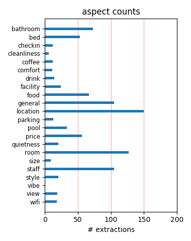
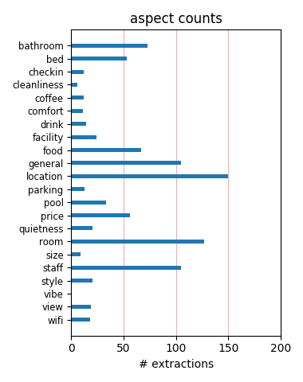

on a recent trip to Sydney we needed something in Surry Hills. The Sebel fits the bill. Central, walking distance from the railway station, Hyde Park, the Opera House. Close to Oxford street ... I could go on. Very friendly staff, clean bright rooms. We'll be back!
My sister and I recently stayed at this hotel and really enjoyed it. It has a convenient location (right near central train station and hop on/hop off bus stop), modern decor, and really comfortable mattresses. Also, the service was top notch. I highly recommend this hotel.
Very new-looking hotel with great rooms. Big beds and pillow menu. Funky, modern bathroom. Helpful staff and lovely communal areas. Based in Surry Hills, so still close to the city (10-15min to Darling Harbour) and same distance to Crown St where there is a great selection of restaurants and bars.
I was extremelly lucky, they were renovating a few rooms and had this special deal at lastminute.com, rates from AU$47,00... unbelievable... I spent 11 great days there, rates between 47 - 81 and 111 dollars. You can walk to train station, free shuttle bus 2 min away to circular quay and great caffes and restaurants!!!
What a great find! Ideally situated to the shops etc. Staff were amazingly helpful, especially Ken the concierge who was able to recommend fantastic things to do and see during our short stay in Sydney. A boat trip over to Watsons Bay and a meal at Doyles is a must. This place is great value for money and would highly recommend it.
I stayed here for 3 nights with friends at the start of our Australian trip. For the price, and the location, the hotel is a good option. It's a 5 minute walk to Central Station, 10-15 mins to Chinatown, and 20+ into the central business district. The rooms are fine, we had no issues, and they're big enough to accommodate a group of friends.
Very large room compared to hotels in Europe, with all amenities including flat screen TV. Pleasant and helpful front desk staff,but servicing of the rooms left much to be desired;bed making was very rough,face flannels were there one day but not the next, or there was only one instead of two. Still,overall, a pleasant stay at reasonable cost.
One of the best places l have stayed, staff excellant, room excellant, public tansport, just around the corner, and staff eager to assist with any need you may have. What you see on the web site is what you get. Very clean accomodation !!!!! My accomodation was a 50th birthday gift from my brother. Cant understand why this is not a 5 star hotel
We stayed in a deluxe room, very large. loved the king bed, The staff were very friendly they let us put our car in their carpark 4 hours early. Best breakfast, had an onelet station which is usually in 5 star hotels also the continental section was one of the best I've seen. Will recommend the hotel to my associates for conferences in the future.
The best thing about this hotel is the location. Very central to everything and close to Chinatown for some great restaurants. Very average room, adequate but nothing special. Reception staff not very helpful and didn't even have a city map to help us. Managed to get a cheaper rate on a last minute site, so ended up pretty good value for inner city.
We stayed here for one night as we had to attend a friend's birthday party.. We booked a studio room which was average. The room had a lot of marks on the walls which I think is from suitcase scratches... Service at check in and breakfast was good. The breakfast food was yummy and had plenty of variety.. It is in a handy location and close to everything.
I love this hotel! It's close to everything and I've always left happy in every possible way. You will not get better value for money regarding, price and location, it's second to none. Their bar fridge always has snacks, water & beer. The pool is located high in the building with a great view. It's quite large & relatively private too. I can't fault them :)
Good hotel clean tidy , front of house abit stuck up and unhelpful and had but of attitude as we are young travellers I thought. Fully booked so cudnt check in earlier but offered changing room in pool area. Gym was good but breakfast prices were incredible expensive just walk 2 Sydney yha hostel for full Bfast at 1/2 the price. Good location to train station also
Quite impressed with this hotel, given the low cost. This Sebel hotel has large beds with plenty of pillows, a modern bathroom, in-room internet access and mini-bar and a large TV. The staff are also exceedingly friendly and there is a large pool and a gym. On the downside, the walls in this hotel are a little thin, leaving you open to noise from the outside and from other rooms.
Sebel Surry Hills is reasonably priced and conveniently located, close to some of the major sight-seeing places as well as the public transportation system. Its strategic location is further enhanced by the friendliness of its hotel staff and the cleanliness and comfort of its rooms. Just a word of caution, make sure you opt for the refurbished wing - that gives it a four star hotel feel.
Stayed at the hotel for 2 nights in a deluxe room. The room was quite nice ,large with a sofa. The bathroom was small in comparison with the shower over the bath. Didnt eat at the hotel. Location good if you dont mind being a bit out of the city. Close to train station and the free shuttle bus goes close by. staff were friendly . nothing out of the ordinary but notning to complain about either.
This was our second stay at this hotel and how a year and better staff has made a difference. Last year's visit was just OK as the room we stayed in was tired and the staff didn't want to go out of their way to accommodate any requests. However this year was a total turn around. Staff, especially Buster, assisted with all our needs and the rooms looked to have had a revamp. Well done and thank you.
Recent overnight stay for work, in a standard room. Fantastic location just across the road from Central Station made both getting from the airport and around the city really easy. Room was very spacious, plenty of room to spread out. Gym was well equiped and all equipment working. Rather cool feature in reception was the in floor aquarium! Everything was clean & tidy and decor wasn't to old or dated.
Spent 1 night only. I moved to another hotel. No soul at all. The carpet in lift area was new but looked like 1980s. The room was not clean. The bed not comfortable. But especially the noise coming from the busy Elizabeth street was just disturbing and never ending. What about spending some money in some sound proof windows? Cannot say about the staff as i barely met them. They seemed efficient anyway.
I stayed here with my Mum for two nights. The location is great, its within walking distance to Central station, Darling Harbour and the City Centre. The staff were friendly and helpful, the rooms were clean and well maintained and the pool was also well kept and stocked with lots of fresh towells. Breakfast was good value for money with a variety of different selections on offer at the buffet. I will definietly be staying here again!!
I found my 3 night stay at the Sebel in Surry Hills very comfortable. The staff was friendly and helpful, with the one problem that I had with the air conditioning not cooling the room I was moved to a bigger better room. The room was spacious and pleasant. The location, near Central Station, was perfect for what I wanted and the food was very well priced for the quality of the food. The pool and gym areas were clean and not to dated in style.
I have stayed here many times over the last 15 years, the location is excellent, Central Station and Darling Harbour are a short walk away, Circular Quay and the Rocks are a 50 minute walk or a short bus ride away. The rooms are always clean, the staff are always pleasant and helpful, and breakfast is pretty good . My only complaint is the sauna/spa are out of order more times than they are working. I nearly forgot to say beds are soooo comfy.
Last month I Stayed at this hotel, and as per previous visits was very satisfied and impressed. I loved my room with a bath, the decaf coffee, the sauna, the friendliness of staff and the little extra touches like the robe for the pools, the lock feature on the back of the door, the in-room safe. The staff really went the extra mile, escorting me to Central station at 4:30 am! Thanks everyone. I recommend this hotel to any woman travelling alone!
This was the second time I stayed here. The first, a year ago was okay. This time wasn't up to scratch. The phone in the room didn't work and couldn't be fixed. The staff were cleaning my room before I had checked out even though my bags were still in the room. The hot food at breakfast was only luke warm. Mine may have been a one off bad experience but it was disappointing. The apology was sincere but I wasn't sure the problems would be addressed.
A great hotel situated very close to Central Station - perfect for getting around. The hotel itself is clean spacious and all round value for money. We got a free room upgrade so I really cant complain. I would definitely recommend it to anyone. The down side is that the hotel is in an area that could do with some regeneration. This hotel is close to China town and within walking distance of the main shopping areas, including Oxford St so perfect for the tourist.
Stayed one night as over on a business trip. Staff are nice and the room was clean and spacious. But the TV did not work and the room was east facing therfore the curtains did not block out the sun in the morning making it very light quite early. Aworking TV and heavier curtains would have been an improvement. Buffet breakfast was very good. The location is Ok for holiday makers but I had to catch a taxi as it was 2km to Phillip St in the CBD, in traffic this cost $16.
Stayed here for work, beds are magnificent and the most comfortable I have ever slept in. I stayed in a 4th floor renovated room, great space, near the pool - which is huge as far as hotel pools go - and quiet. Ate in Townhouse - the bar on ground floor - food was great and service very good and friendly. Heaps of beers on tap and even some from the bloke who owns the hotel! All in all a great stay, I will be staying again; new business centre was very handy during my stay.
We stayed at the Sebel Surry Hills on the 25th January 2012 for its location to the Enmore Theatre, as we were seeing a band that night. Checkin was really easy. A very clean and comfortable room, lovely staff, very comfy beds (most important). We asked for (and were given at no extra charge) a late check out which we really appreciated after a late night out. Great spot for going to Newtown, public transport easy access etc, and we would definitely stay again. Would definitely recommend.
To stay here was convenient for meeting and room price was business booked. But it is a relatively soul-less place. Parking is useful, at modest price for inner city. Also readily accessible by train, including from airport. But we would never stay here for a private visit. The windows are sealed, the aircon is good but not choice of fresh air, not possible at this site. Beds comfy (multiple visits). Stay here if you want really efficient location to get in and get out. But not for any atmosphere.
My room on the 5th floor was very spacious and comfortable. It was well laid out and not at all pokey. Plently of room to put luggage, sit on the couch, etc. The bathroom was very clean and well maintained also. No mould, smells, stains. The location is a little out of the centre of the city which could be viewed as both good and bad. It's about 10-15 mins walk into the heart of town. You can definately find a compatible hotel closer in to the action and the sights. It is close to Central Statiom though.
Stayed here while on a business trip and the hotel was booked for me so I was apprehensive after reading earlier reviews. However I was pleasantly surprised by a very clean and comfortable room. It was a larger room than many others I have stayed in and quite OK for my stay. Service from the staff was consistently good and it is close to Central Station which was only a 10 minute ride from the Airport. Not where I would choose to stay for a romantic weekend but more than happy to use it for business visits.
We booked this hotel late (between Christmas & New Year) for a New Years Eve stay 2011/2012 mainly because it was one of the few hotels who hadn't jacked up their standard room rates nor did they insist on you booking a minimum of three nights. The hotel was conveniently located near Central Station. The room was clean & well appointed and although we had the room right next to the lift well, we were not disturbed at all by any lift noise. The hotel desk staff at check in and departure, were friendly and helpful.
Booked with wotif.com not sure if this is why we ended up with a crumby room in the part of the hotel not yet refurbished. Room 704 and the original room furniture seemed to have bee replaced with older more down market temporary furniture. The bathroom have many tiles missing from the wall and dripping taps. Lots of drilling noise from about 8.30 - 3.30 ( not the place for an afternoon nap!) However the price was good for a hotel in this location and an easy walk from Central Station and its connection to the airport.
Stayed here last April during a particularly busy weekend when many hotels were booked out. Not really much wrong with this hotel at all. Rooms a bit smallish, but nicely renovated and clean. Very friendly, helpful staff, and pretty good location close to Central Station. Only real problem, is that for the money, there are other hotels that are that little bit nicer, in a bit better location. This hotel would not be my first, second, or even third choice, but if other hotels in CBD are sold out, this would be a very reasonable backup.
We stayed here on a long weekend from the Gold Coast. We booked through wotif's mystery deal so didn't know what hotel we would be staying at until we paid for it. We got there at 11:30pm and loved the fact that they had 24 hr check in. Is nice and close to central station so very easy from the airport. The staff were so lovely and accommodating. The room was nice, modern furnishings. Couldn't hear any noise from the busy street below. For the money we paid we were more than happy with the hotel and would happily recommend it again! :)
Booked this hotel not knowing what to expect and was surprised - in a good way! It was close to the central train station, near to some great shops but a little out of the CBD- which was good as got to see more! Staff were pleasant and knew what they were doing! Room size was great. Prob only downside was it could have been better looked after - few marks and dints in walls so general ware and tear just needed looking into! Generally though the hotel was fine for my purpose; having somewhere decent to sleep whilst I got to explore Sydney!
We only stayed one night, but just wanted to say the walls between the rooms need insulation of some type. Obviously the guest next door heard us come in a little late (as quiet as we thought we were being) and decided to turn his TV on full blast for an hour, then again at 7am!! I heard him have a laugh, a coughing fit, even make himself a coffee!!! So yes neighboring guest noise is a huge issue. If you're looking for a sleepin this isnt the place to do it. Our bathroom had a lot of soap scum on the tiles too. Breakfast was lovely though!
The room was so dirty, I would have run away! I don't think they had vacuum our room for the last weeks... hair on the carpet, crumbs, bigger crumbs, even a hair clip... Then the door for the bathroom was cringing, not only ours, we could here the one of the next room too! Shower water pressure was so low... you really wonder how can this happen in what looks to be like a nice hotel in Sydney. Staff was not cooperative and make no effort to be understood as my partner does not speak English fluently. I would not recommend this place for a second...
My family and I stayed here for one night on our way to New Zealand and were very disappointed with the room we were given.We had stayed at the Sebel Surry Hills two times before but had never been put in such a sub standard room as we did this time.It felt like we were shoved in a room that had wet carpet,bubbling paint and was unfinished even though the refurbishment was meant to have been done in 2009 all because I had gotten a special online.It was very upsetting at the time and I contacted the hotel but never got a response so I took it that they don't really care.
We stayed here on the 29th and 30th of Dec. prices during this period are inflated everywhere in Sydney and this is no exception. The negatives here outweigh any positives. Firstly the wall mounted tv. Analogue, stretched, with none of the additional options available on digital such as HD One, 7Mate etc the remote doesn't work properly either. There is no exhaust fan in the bathroom moisture saturates everything, the rooms are small, the heated spa & pool cold... One could go on but what is the point? We stayed here years ago and it was great but now it's near embarrassing. Pity!
We spent 4 nights at the Sebel Surry Hills and thoroughly enjoyed our stay. The hotel is in a great location with Central train station and buses close by. The reception staff were very friendly & helpful as were the breakfast buffet staff. Our room was very spacious and clean, with a daily change of clean towels & our comfortable beds remade. We were on the 3rd floor and hardly heard any noise from the street or from the other rooms. Swimming pool, sauna & spa was great especially after a long day out! All in all it's an excellent hotel to stay at, we will definitely be staying there again.
We stayed in this hotel after Christmas on a wotif deal rooms $AUD159/night. The rooms were very spacious and clean. The bed is a little on the soft side. The rooms were very quiet. It is a great location- it is close to the fabulous eating in Surrey Hills, short walk to China Town and close to public transport (Central Station and buses on Elizabeth St). If there are 2 or more of you, dont get the airport train $15pp. A cab from Mascot airport was $30. The hotel is a little soulless, but given that the hostel around the corner was charging $AUD69pp in a 6 bed dorm, I will take soulless anyday!
where to I start? The rooms were old and smelled. Definitely not as nice as the photos lead you to believe. We had 2 twin beds vs. a king - we tried pushing them together, but my bed was about 2 inches taller than my husbands so that didn't work. And no comforter - just sheets.... The bathroom was falling apart - a giant crack throughout the tiles, and was gross. All we heard all night was the train station and traffic. And $9.00 for cold cereal in the morning? Give me a break! It was the most expensive hotel we stayed at in Sydney, and it was the worst! i'd suggest searching for other deals!!!!!
Our first visit to this hotel and it was a great experience. Very helpful, smiling staff at reception with advice on parking etc. Rooms large, clean, modern and well maintained - everything worked (including the safe). Breakfasts were first class in exceptionally pleasant room with no shortage of newspapers. Location is of course excellent - especially with the free CBD shuttle bus stopping 100 metres away. Easy walk to a host of restaurants on Crown St. Very good value (we had picked up a special online deal well in advance). And finally, no surprises at check-out is always a plus! We'll be back!
A good, central option if you get a good rate... I paid about $140 AUD for the night and it was close to central station (great access by train from airport), close to the entertainment districts and most other areas of Sydney you'd want to see. Room smelled a little stale - almost as if it used to be a "smoking" room, but bed was comfortable...TV had poor reception and the decor of the hotel looked a little dated. Foyer and reception looked very inviting though. Spent little time in the room, and would recommend if you were going to use this hotel as a base, rather than spending too much time in it.
We stayed here for 5 nights at around 95 AUD a night, which is an absolute bargain given what you get. Sure it's not perfect; the paint in the room was tatty in places and the staff give the feel of students doing holiday work. However, for that price we got a large relatively quiet stylish room, huge double bed, big tv and swimming pool all in a very central location. Go to Brisbane and you'll struggle to find a double room in a dirty hostel for less than 80 AUD. If you're looking to do Sydney on a smallish budget this is the place for you. If you're looking for the height of elegance, look elsewhere.
We had a pleasant stay at the Sebel. Fast check-in, under 5 mins! The room was clean and spacious. The bathroom was clean though some of the tiles looked a little dated, cracked etc, but they were clean so that is the main thing! Bed was super comfy with lots of pillows and cushions. Breakfast was okay, bacon, eggs, sausages, hash browns, tomatoes, cereal, toast, pancakes, fresh fruit and yoghurt. Wasn't the best I have seen but filling enough. We had breakfast included in the room, not sure I would pay $23 for it. It is about a 15 min walk to the main area of George Street, only 5 mins to Central Station.
The hotel doesn't have much of a grand entrance but the rooms make up for it. Large and well decorated with an enormous bed, large desk, sofa and coffee table it came close to being a suite and this was the cheapest room. The bathroom was exemplary it was actually a spacious wet room with a really good shower. Reception staff were charming and helpful and both checkin and out were carried out with the minimum of fuss. The hotel is close to Central Station so there are good transport links to the whole of the area. Surry Hills has lots to recommend it to foodies with interesting cafes, restaurants and delis.
It cost us only AUD 169 for 2 people which included breakfast at 6am which is good for early flights. We are a very fussy 50+ couple and were rapt with this place. A short walk to the Central Railway Stn, plus yummy cheap eatery called Elephant Jump up the hill. The bed was the best ever, so their claim is true. Traffic was noticeable early on, but when we closed the heavy curtains we did not hear anything. Good shower/bathroom and although we chose the basic room it was superb value, heaps of space, and had everything we needed, especially considering hotel prices in Sydney. Where else can you pay such a low price for this standard.
I stay at the Sebel quite often for work - it's a perfect business hotel if you are down that end of town and excellent value. Close to Central station and China Town - it's a little out of the way if you prefer the Harbour Bridge end of town. The rooms are very nicely decorated and the bathrooms I've had have been lovely. My only constructive criticism is that the rooms have often been far too warm and the thermostat adjustment doesn't work very well (I do prefer a cool room - less than 23 degs). Apart from that, the Sebel is clean, quite upmarket/swish and the staff are very welcoming and helpful - it's a good place to stay in Sydney!
Really happy right from the staff, front desk staff so helpful, bags delivered to room within a few minutes, good advice on where to go and eat. Room lovely, bed super comfortable, bathroom nice and clean. Fantastic breakfast, alot of choice. Good gym with standard weights and good variety of exercise machines - pool great as well. We got a great deal on Wotif - it ended up being one of the mystery hotels and deal inc breakfast. A few minutes walk from the Central Station which is so easy to use to get up and down from Circular Quay and only 10-15 min from the airport by train - would 100 times rather stay at the Sebel than some nasty airport hotel.
We stayed at this hotel for three nights on a package deal. It was rated foru and a half stars but that is being very generous. While our room was clean and confortable it was definatly not "deluxe" when you compare it to other hotels of a similar rating. For example there was only a tiny wardrobe for hanging and no drawers for clothing and other items. It is situated in a fairly dodgy part of Sydney but that is offset by being only a couple of minutes walk from Central Railway Station. The staff were very friendly and obliging and breakfast in the restaurant was pleasant. In summary a nice enough place but if you are looking for a little bit of luxury, look elswhere.
We stayed in a 'deluxe' room with our two kids, aged 7 and 10. It wasn't particularly 'deluxe' - but it was big, ie large - and very comfortable - bed for parents, double sofa bed, for one child and still room for a single roll out for the other. Its very close to Central station, and not too far from Crown Street, for restaurants and shopping. We had a room at the back, so it was quiet. Service on front desk was very friendly and efficient. We thought it was fine for the price. Downsides: its a little sruffy round the edges, the pool was nowhere near the 27c indicated (ie it was freezing!), and the gym has seen better days. But the bathroom was fab, buffet breakfast was good.
On getting to my room, i noticed a very strong smell. Having booked quite cheaply on wotif.com, I thought i got the left overs. However, they moved me immediately and upgraded me. The rooms were very plain. However the standout feature was the staff- friendly and attentive. I think care is needed before booking this hote. First, it is very close to central station which is great. On the other hand, its location is right on the edge of the CBD. If this us your first time in Sydney, definitely do not book as there are many better locations but for regular visitors who know their way around it may be a cheaper alternative to many of the expensive places in the Rocks and Circular Quay
I have stayed in 4/5 star Hotels around the world and can, without hesitation, say that the Sebel in Surry Hills Sydney is equal to the best, for location and comfort. I find the hotel easy to walk to from Central Railway and the CBD. I can always get a taxi or bus from out front or nearby if necessary and I have never had to worry about my car with parking available. The staff are always friendly and the rooms always clean and regularly updated with new colour schemes and decor. There are abundant eating locations a short walk away and so too theatres and nightspots. I have stayed at the Sebel with my children who have had hours of fun in the pool and gym. I have no hesitating The Sebel.
I've stayed a few times at the Sebel (and under its previous names). It's certainly in a handy location, and its lower price than many of its CBD competitors is a plus. Parking is OK, usual CBD cost of $32 per night. Great pool and good in-house dining options. Unfortunately on this stay, we got a room that seemed to have a lot of noise. Some of this seemed to be street noise (were facing Mary St) but also quite a bit of internal noise, unsure of whether it was plumbing or neighbour noise. Never experienced it before here. Otherwise, the rooms were spacious enough, with a palatial king size bed. I'd probably consider staying again, but would stay somewhere else if the price and location were comparable.
We booked this hotel through lastminute for a cheap price of around $130 a night. On check in we were told we'd been upgraded to an executive room, however it looked pretty standard to us. Recently refurbished it was still a little rough round the edges (no toilet roll holder?) and drafty windows. The main problem with the room was it was on the third floor, directly above what must be a bar or function room. Both nights people were stood outside talking and smoking. The smoke could be smelt through the drafty window, and conversations heard, making it hard to get to sleep. Other than that, it was comfortable with a small bathroom and large TV. Best thing was the location - only a few minutes walk to Central.
I booked this hotel through the Wotif site - it was the 4.5 star secret hotel. Although at first I was disappointed it wasn't in the cbd as such, it was so close anyway. We got upgraded to the Deluxe King Room on level 9 & it also had a sofa bed/couch. room was big, huge window and smaller window that you could open - pretty scary to look down to the ground. Carpark underneath at $25 for 24hours & you could come and go as you please. We ate at a little cafe around the corner which was great called Flo - breakfast was brilliant there. From the hotel, head down the hill and turn right at the 7 eleven on the corner, follow until the next little laneway/road. Turn Right and it is just on the other side of the Buddha shop. Worth a try.
I booked this via wotif's mystery deal and after reading the TripAdvisor reviews was dreading my stay. However, I was very pleasantly surprised. All the staff were incredibly welcoming and helpful, I was upgraded and they allowed me to check in very early and leave late with no problems at all. Room service was prompt and good, the room was spotless if a little boring - but had everything I needed, including tea/coffee facilities which I appreciated. They do desperately need to repaint the hotel room doors, and as others have commented the floor aquarium is a little underwhelming, but these are minor aesthetic problems. The location is also very handy for business & leisure. Overall I had a brilliant stay and would definitely stay again.
Stayed 4 nights Plus – Convenient location for access to City, Darlinghurst, Paddington and Surry Hills; Small gym and pool; staff were helpful; got a superior room for only $149 per night; largeish room with bath; ok selection at breakfast buffet. Minus – Road noise (stayed on the 9th floor facing Albion st, but still needed ear plugs); expected more from a 4.5 star hotel. Very noisy air conditioning in room; no Wi Fi; Needed to ask for the room to be made up (then they didn't change sheets); welcome bottle of sparkling wasn't there on arrival, had to phone reception to ask for it; Water in urn at breakfast buffet was luke warm every morning; no courtesy towels in the fitness centre. Overall, this is really a 3.8 star hotel at best.
Stayed one night for work last week and its an OK hotel. Chose this as its right around the corner from where I was working and within walking distance to Central Station and the train to the domestic airport. Stayed on the third floor opposite the Gym. It was a quiet room of a generous size that had recently been refurbished. Good bed (king) and choice of pillows. The bathroom was similarly generous in size. Although recently refurbished, it was a cold featureless room with old dirty curtains and a well-worn sofa. The TV was on the wall opposite the bed, a bit hard to see from anywhere else in the room (i.e. the sofa). In all, good value with breakfast included - a mediocre buffet of hot/cold food. The coffee out of the machine was abmismal.
I stayed here for one night on business in Sept 2011. Overall, this was a pleasant enough hotel to stay in - located very close to Central Station and only a short walk into the city centre (fyi it is about 4kms to Circular Quay) I arrived ewarly and my room was not yet ready. the check in and check out process were both handled very efficiently and the staff were excellent The rooms were nothing out of the ordinary, but clean and comfortable. The only slight negative experience I had was that there was no milk in my mini bar for coffee. Oh and of course there was no free internet, always my big bug bear with any hotel you are paying $170+ a night for Breakfast was excellent and the restaurant really quite lovely I'd certainly consider staying again
The sebel was offering an escape special of $199 for a renovated deluxe room, free overnight parking and 2 buffet breakfasts. We were meeting friends for dinner in the city so booked 2 rooms. We booked direct from the hotel, same price as wotif. Booking was a breeze, check-in was a breeze. Our room was very nice and roomy, our friends wasn't as nice but still roomy, clean and renovated. The buffet breakfast was very good with a wide range available. the only thing that wasn't nice was the coffee. It was very convenient for what we wanted and there was nothing for us to criticize Just make sure you ask for a renovated room by other reviews on here. Hubby left a shirt and it was posted to us (COD though, bit expensive at $12.50). Overall we would stay again
I booked it via internet because they had a summer special ($149 for deluxe room with buffet breakfast). I was quite impressed! the staff was very helpful and friendly. Our room was recently renovated and the bed was very comfortable. Buffet breakfast had lots of choices and the hotel was faily close to a lot of facilities and train station. The only downside was a swimming pool and sauna. Ever though it was meant to be heated the water was fairly cool. You had to get out of spa to turm it on and the bubbles would go off very quickly. The sauna wasn't working at all. Plus they had no seperate swimming pool for children so we had lots of annoying kids splashing around while we were swimming. I would recommed this hotel to a friend and would stay there again.
The location is great and the newish bathrooms are good, but the rest of the room is so tired. The walls are painted plain white and our particular room had patch marks all over the wall in another shade of white where they had tried to cover up marks from other guests - very tacky indeed. Beds are very old, furniture probably even looked old when the Sydney Olympics were on and the TV is some poor quality no name unit with very average picture quality. Breakfast was a simple affair, all OK but nothing great. Many of the electronic door locks are damaged and prone to not working that well - we had to asisst an elderly gentleman with his as the lights on the lock were all broken so he had no idea if the door was unlocking or not. Overall pretty ordinary and we wont be back.
I stay in the Hotel once every month (for the last 3.5 years) for business and have never had any problems. The rooms have always been clean and tidy and have everything I need in them. The rooms have recently under gone refurbishment and all the ones I have been in now have LCD flat screens and new trendy bathrooms. I did point out in a feedback form I was given that they should have at least 1 full lenght mirror in the room, like they used too. It would have to be the easiest reasonably priced hotel in Sydney CBD to get to from the airport link train, get off at Central and it is 1.5 blocks away. I even take my family here now when visiting Sydney for fun. There is a secure parking garage ($10 a day) on the premises. Only thing I don't like about Citigate is it doesn't have a loyalty program.
We spent 3 nights here in March with a special package - breakfast, parking and museum tickets and transport. Great value: very close to Capital Theatre, SCG and easy access to buses for shopping. Check in was easy and staff excellent. Room was neat and tidy, though a little dated with marks on the wall but overall pleasing. Lifts fast and not crowded. Room swipes worked every time too! Breakfast was great - all 3 - with the quality of all types. Service was friendly - but do get all the photos in the restaurant squared up!! It drove me crazy - ocd?? Most impressed with the friendliness of all staff - all went out of their way to speak and genuinely enquired as to what you had planned etc. When asked for help nothing was too much trouble. Pool/spa was clean with fresh towels. Will be happy to return.
Good points: - great location (near Central Station, Chinatown) - 1 friendly staff - cheap (found it on wotif, AUD 109 per night) - nicely renovated (bathroom was nice) Bad points: - this hotel cannot call itself 4 stars!!! - lobby is not very clean - lift is disgusting - some hotel staff were rude, some were ok, some didn't really know much - room conditions were ok, good size, but just don't look at the windows, dirty as! Dust, spider webs, also the carpet didn't seem very clean (did't want to walk on it without shoes) - don't expect to get a room before check in time (I even had to wait another hour after check in time for my room to be ready, actually at check in time, my allocated room wasn't even cleaned) - I wouldn't recommend the hotel if you arrive in Sydney in the morning after a long flight
Booked this hotel based on prior reviews and fantastic location in relation to proximity of Central Station. Upon first impressions the room looked modern, spacious and clean and the reception was friendly. Visit was spoiled by issues with Internet Connection in the hotel rooms and the failed attempts by the front desk staff to communicate the issue and to provide resolution. Management where not responsive to requests and suggestions around improving the front desk processes to ensure business travelers where aware of known internet connection errors up front and to ensure staff where advised of help desk details to pass on to guests (only received the Sebel IT help desk number after 3 calls to the front desk). Would have given the hotel another chance once refurbishment was complete...won't after my experience with the staff.
I've stayed here many times in the past but not for quite a few years. It appears to have been renovated and is significantly better now. The 8th floor room was very good with a very comfortable bed and all amenities. The bathrooms had clearly had a make-over with new taps, vanities and fittings. All areas of the hotel appeared clean and well maintained. Staff at reception were fast, attentive and generally excellent - one of the best hotels for service in recent memory. While I didn't use the pool, gym or restaurant, they all seemed to be in excellent order. Public areas were fine. There were a large number of groups staying at the time (Chinese New Year) but everything was smooth and trouble free. Only drawback is that the hotel is a 15 minute walk to the central part of CBD (but conversely only 300 metres to Central Station)
From check in to check out the service was excellent. The staff were aware of the local area and made great suggestions on what was around for coffee and services such as tailoring. Very friendly atmosphere whilst remaining highly professional and the presentation of the hotel and staff was great. Breakfast was a comprehensive selection of well prepared and presented food. Rooms were very clean and well presented with exceptionally comfortable beds. The pool and spa area was clean and safe and a welcome break. Overall a friendly welcoming establishment with a modern refurbishment and feel. An easy walk to Chinatown, Darling Harbour and the city with plenty to see along the way and places to have a rest with coffee. Close to the Crown Street cafes as well as a plethora of places in the immediate surrounds. Thanks for letting me play your piano.
Stayed here for a city break for one night mid-week. Got a free upgrade from Superior to Deluxe room as part of a promotion. Nice, clean room with room for a sofa, desk and coffee table. Rooms were renovated so they were great. A little bare but totally fine. Location is good for some great restaurants in Surry Hills and for anyone who wants to be close to Central Station and the city. My only complaint was that the air con wasnt working in the room. We called front desk and they sent someone up who couldnt get it working so we were offered another room but it was a Superior one which wasnt as lovely as our Deluxe! So we opted to stay in the Deluxe and the staff bought in a fan for us which worked fine. They also threw in a complimentary buffet breakfast for 2 the next day so that was more than enough to make up for the inconvenience. Overall, a really pleasant stay!
The negative reviews of this place are a puzzle. I'm not sure whether there's two classes of rooms in this place but we have just had our 5th visit in 2-3 years and we just can't find a better option for our Sydney trips. The location is brilliant - you are within easy walking distance of Central Station (trains to anywhere); Chinatown and Darling Harbour; the Capitol Theatre; the shoppers (my wife and kids) can be in David Jones on Elizabeth St in 20 mins. Walk to Hyde Park. Up the hill and you're in Crown Street for all the yummy food and nice pubs. Back to the hotel. The pillow matresses are to die for !!!! I don't sleep well when I travel ..... but here I just sleep deeply!. The decor is modern; the rooms are well immuned from the city noise (we did have an Albion St facing room once and the traffic noise was noticeable). And with great friendly staff, why would you stay anywhere else if you need to be in this part of town.
The service wasn't as good as I expected. I knew that normally the check-in time should be 2pm, but other hotels (e.g. holiday inn) can also allow people to check-in even at 10am. I didn't expect that I need to wait until 2pm sharp to check-in. It's a bit ridiculous. Besides, normally every 4 star hotels must have dental kit inside the toliet, and i need to call the reception to get it and the slippers also, which wasted me more than 1 hr to wait. After 30 mins i called the reception, i asked the housekeeper to get me the dental kit, he said he would give me in 10 mins, but i've got no reply after 30 mins. Then, I had to call the reception again, and they told me there is no slippers inside the hotel, and they'll give me the dental kit soon. I can't believe that they're ALL BUSY. In additions, on the next day we stayed, normally the housekeeper would change all the towels. But they just tidy up those we've used, but not replacing the new one.
Stayed here for one night on business after getting a half price deal through a website. Close to Central Station and there are some good bars/restaurants/architecture in the neighbourhood. Building is quite tired and uninspiring, and the rooms were average at best- very nondescript. Internet was really poor- 8 dollars an hour and couldn't log in and out- which meant that i had to spend $16 to check emails for 10 minutes in 2 hours. The business centre was ok- free printing at least. Breakfast was passable- usual options, average black coffee, had to pay for a proper coffee. Quite nice yoghurt and ok pancakes. low point for me was the bed and pillow- ultra soft bed that sloped to one side, and ultra soft pillows that provided no support. Combined with the street noise i only managed a couple of hours sleep. Plus side- the service was ok. Much better options around for the full price- and probably better options around for the reduced price i got!
We stayed here at the end of a 5-star South Pacific cruise, and so were anticipating weaning ourselves off all the self-indulgence of the cruise lifestyle. The Sebel Surry Hills was the perfect stopping point, as the 5-star level of service continued! Knowing nothing about Sydney, we chose this hotel mainly for the good price. It far exceeded our expectations. It is in an excellent location, close to free bus, pay bus, and train, and close enough to downtown for an energetic walker. The spacious room is nicely laid out, with a good sitting area, and a large clean bathroom. There is an excellent pool and hot tub, and an ok gym. Also a nice rooftop terrace, although they need more lounge chairs. You can include breakfast as part of your rate, and it is a huge, well done, hot breakfast buffet with excellent coffee. The concierge, Ken, is dynamite with restaurant, attractions, and travel tips - his personability sets a high standard for all the staff.
Went directly here after completing Philly > LAX > Sydney marathon flights and arrived around 10AM. We forgot to request early check-in but they accommodated our three person party upon arrived which was HUGE. As you'll see in other reviews, it was recently renovated so the room was nicely up-to-date with a wall-mounted flatscreen, two twin beds, and a pull out full-size sofa bed. Very clean and the bathroom was super nice. Really good showerhead with a cool glass pane rather than a shower curtain. Staff was accommodating, we left our bags at the desk for a few hours following checkout. There was a safe in the rooms. Surrounding area is pretty hip with some good breakfast spots, including Bruscetteria II and TT's Cafe right up the street. Happy hour at the hotel bar has decent beer specials from 4 - 6 PM. Only downside was the shrieking birds on neighboring buildings early in the morning. I've never heard a bird like that, sounded like a pterodactyl!
Once I arrived at the hotel, the immediate response from the staff was that utter chaos as it looked like it had beome a very busy night for them. The two staff on the Reception desk stood there and did not even acknowledge myself or my partner. There were papers all over the Front Desk and when someone did come and assist they asked if I was being looked after! I believe that the female who asked this question was a manager as she was confirming all details of my reservation, which the other two staff were not. When I went to question her about the issue of myself and partner standing in the line she tried to chuck a joke in stating that it was a busy night and her team was sufferring! I DON'T CARE ABOUT THAT! NOT MY PROBLEM! I have stayed here and at other Mirvac properties, but I will now refuse! I do not care if I am a VIP on there system or not, but one thing I agree and also other people I have spoken with is that the Management System in this hotel is SHOCKING!
Stayed for two nights begining of June 2007. After staying at a 5star hotel 2 nights prior (see my Shangri La review), could notice the difference in hotel ratings. The room was large and comfortably furnished although the lack of valance around the bed made the room look a little cheap(which it wasn't). It was a 'refurbished' room (not sure which decade that occurred in). Pool, Sauna & spa facilities were in great condition and well serviced (better than Shangri La in my opinion). Staff were friendly, courteous and helpful. Had a couple of issues with the access card failure. I did notice in the lift that there was no security and anyone could travel to any level. Location was handy to everything and quiet, so would suit over 30's weekends away and business travelers. What I didn't appreciate was the false fire alarm at 7am on a Saturday morning. Having said that, the siren was loud within the room and could have waken the dead :-) A good overall experience and would recommend.
I do not usually complain however was quite dissapointed with the level of accommodation, I had a fairly high expectation hearing good reviews of this hotel - the service and staff were great and it was not their fault - however - the air con in our room didnt work - it was like a sauna, when I asked reception- I was offered a pedestal fan for the room and told that this was common in the hotel when it was really hot outside..... There were marks on the walls and light switch in the room was coming out of the wall. I booked through an entertainment card and the total bill still came to approx $500 for 2 nights and that was with free parking - no mini bar items were used - in comparison to other hotels in the area e.g. the Amora Jamison (5 star ) at the Rocks- I have stayed here for a cheaper rate in the last 6 months (approx $180 p/night) ... I am more than happy to pay money for quality accomodation The Sebel Surry Hills was overall just dissapointing for the amount we had to pay!!
It wasnt expensive, but still was not cheap enough for what it offered. There are better located, better value hotels in Sydney - Ive stayed in most of them. I was upgraded at the Sebel because they know I worked in Travel. The upgraded room had a sofa and chairs that were badly stained (like something had spilt on them and not cleaned up), they were badly worn with holes in the - the cushions were the same. This was not typical hotel wear and tear. The carpet desperately needed a steam clean. In general the rooms were grubby - Im not sure if the sheets were terribly clean either hence I didnt sleep well - not to mention the old mattress with holes in it. The bathroom was also very grubby. Definitely not a 4 star plus hotel in regard to cleanliness and service. Its also in Surry Hills, which while its close to Central station, its a fair way walk to the touristy parts and the business parts of the CBD. I wouldnt rate this above a 2-3 star hotel - in fact Ive stayed in better 2-3 star hotels.
We stayed at this hotel last week for 4 nights and found the whole experience fantastic. The staff were extremely pleasant and totally professional and helpful with any questions we had. We had a Executive room which was spotless. The pool area was really nice to visit after a hard days walking around and we went up to the sundeck most nights to cool down. We decided to bypass the breakfast as we were on a tight budget and opted to walk across the road to centennial plaza in the mornings to have breakfast there for $8 each, which included eggs bacon tomato toast AND coffee, a bargain. For three nights we went to Taylors on Central which is a 2 minute walk from the hotel for their steak dinners for $7 a head, which included a Steak with your choice of sauces chips and salad, another bargain! You can't beat this hotel for an easy commute into the city, Central Rail Station is only a couple of minutes walk, or you can walk down Elizabeth Street and catch a bus. I would not hesitate in recommending this Hotel! We plan on visiting again next year and will certainly be staying here again.
My partner and I stayed here for 3 nights, along with my aunt and uncle. We had our own rooms. Originally my partner and I were in a cheaper room on a lower floor, when we checked in staff were really nice and upgraded my room so my partner and I could be next door to my aunt and uncle and have the nicer room for the same rate we were originally paying. This gave me a very positive feeling about the hotel right from the start! The rooms were large and comfortable and very tidy! I felt like I was perhaps getting ALOT more than I paid for. My partner and I also took full advantage of the room service which was amazing. The food was delicious, no complaints! The swimming pool, spa and sauna were great. However when we went swimming we were expecting some clean fresh towels to be there... but were mistaken. We also had complimentary breakfast each morning we were there which was really good! The food was not cheap and nasty. The only negative thing I have to say about it was the disappointment with the fish tank in the main foyer. It was very dirty and not very nice compared to the photos on their website.
I had booked this hotel and then decided to look at TA for some reviews on it. Needless to say, I arrived at the hotel expecting the worst and was prepared to be asked to a clean room! Well, I checked in and was given a room on the 3rd floor. All good..same level as the compact gym. The room was one with facilities for a disabled person so I rang down and requested to be moved. Within minutes someone was up with cards for a new room and it was clean and I was happy. I will admit that some one the room doors have chipped paint as you walk along the corridor but once inside the rooms, they are clean and well set out. I ordered room service and was pleasantly surprised there was no room service fee. Good menu with reasonable choices. The gym is compact with one each of the usual treadmill, rower, stepper, etc etc and some weights. It is airconditioned and has a water cooler for use. I had breakfast included and it was buffet style in the restaurant. It was just ok.. nothing to rave about. It was included in my room rate but other than that I wouldn't pay for it. The staff were friendly and if I had to, I would stay there again.
My mother, sister and i booked to stay at the Sebel Surry Hills based on the reputation of the Sebel hotel chain. However when we got there we were less then pleased. While the staff were very attentive and helpful. The location was good in terms good access to public transport the area was a little run down. The room and hotel was well below par. The room, whilst having a vauge ressemblence to the pictures on the web, showed the scars of over use with patchy paint marks over the walls. The bed was ok but covers again showed this use. The room was serviced daily, the condition of the bathroom showed the years of use and to be honest was just gross, the clean must of been very relaxed as hair and ruibish were still on the floor on our return. The room was dated and as i said showed its use over time incredibly clearly, stains and as previously stated wall patch ups all over the room. The gym also was less to be desired. The buffet breakfast was okay not great. I certainly wouldnt recommend this hotel to any friends or family and we were incredibly disapointed with the room condition, towards the end we spent less and less time in it.
II liked the location and the front lobby. From there it went downhill. I was told to talk the left to the left of the reception desk, which was down 5 steps, no ramp.. But there was a handicap lift I could have taken. My room was unimaginative at best, blank walls with the bed well offset from the television which was the only adornment on the walls. I felt like I was in a backwater motel. The air condition was ineffective, my room was humid, and the room was slightly grungy with cleaning that was appropriate to a backwater motel where you would expect dust bunnies under the bed, grime in the corners and an overall feeling of seediness. The television had 10 channels, again I felt like I was in no-where-land. The bed linens were clean and quite good quality. The mattress itself was like a sow backed horse. Once on the bed I rolled into its hammock like center and was quite uncomfortable. The bed sucked. The gym was mediocre as is most hotel gyms. The pool quite nice. The staff were good. The location was great in terms of closeness to the trains, and there were several good restaurants and pubs located close by. All in all a 2.5 out of 5 for me.
Spent three nights at the Citigate from the 4th -7th June. We booked this hotel through Wotif website, it was listed as the secret hotel, located in the CBD, 4 star rating. You don't know whqt hotel it is until after you booked it. We paid $ 140.00 a night and were very happy with it. Reception staff were very friendly and helpful. We were given a large room on the 9th floor with 2 queen size beds, it was very clean and tidy. We did have some problems with internet which still have to be resolved. Paid $ 15.00 for two hour interent access but also seemed to have been charged for downloads. Not sure if this is correct or not. Also found the temperature of the shower to be a bit disconcerting. It changed from cold to hot frequently without touching the control and could be dangerous if a child was showering. Overall we were very happy with the hotel. It is very central, close to the train station (about a 6 minute walk), we took the train to the International airport and that was very easy to do. We also attended a show at the Sydney Entertainment centre and one at the Capitol theatre and both were about a 5 minute walk from the hotel. Would stay there again if got the Wotif rate.
The Citygate Sebel is now called the Sebel Surry Hills. I stayed there for two nights in late Febuary. Initial impressions of the hotel were that the refurbished rooms were nice, clean and spacious. I had a room facing the side street and apart from noise from idiots drinking out on the street corner it was quiet. The foxtel in the room only extended to sport, good if you like sport not so good if you don't which unfortunately I don't. I got a good deal as they had just refurbished (two complementary drinks and free breakfast) but I had to drag the coupons and the information of where breakfast is out of the person working on reception. He seemed far more interested in anything else rather than checking me in properly. Also watch what you are charged for room service, they tried to charge me $6.5 for sparkling water when the menu stated it should be $3.5 and also the multiple menus are confusing. There are 3 menus, the bar menu refers to the prices you would pay in the bar as opposed to the All day dining (which is the room service menu) is the prices you pay in your room ($5 more expensive) Would I stay there again, possibly its quiet a convienant location... I would just want to get another good deal.
We stayed here recently with our 4 year old, as the hotel had a package on with Easter Show Tickets, parking and breakfast included. We paid an extra $20 to upgrade to the Deluxe Room as I found out refurbishment is not complete and this applies to the superior rooms. .Apparently they only have new beds and not new bathrooms and I had read the dismal reviews about the bathrooms. The room was fine, new bathroom, curtains are still old and didn't quite reach the end of the tracking, a very small gap. Bathroom was new which was reassuring. Parents of babies/ young children check if your room has a bath when booking, as ours only had a shower. However this wasn't a problem for only one night. Yes you do hear traffic, sirens etc but you have to expect this being next to Elizabeth St. House keeping service was a little slow but I think the hotel was quite busy this particular weekend. Breakfast was ok, they had run out of weetbix. A good location for those relying on public transport. Pool was fine, is 15 metres and indoor. A short walk to Central Station. Would possibly stay again but only if the special was on, would not pay top dollar as I would want to be in a better part of town if I was paying big money.
Although this wouldn't be my first pick on a future trip to Sydney, it was a suitable base for a recent Girl's Weekend. Previously we'd stayed in the CBD but as we wanted to explore Surry Hills on this trip we opted for the Sebel. The location was quite good for our purposes but the hill up to Crown St is a killer so beware! It is close to Billy Kwong, Bill's and Assiette restaurants and some great bars, galleries and stores in Bourke, Cleveland and Crown Sts. The service was helpful and we were provided with our room in the early morning which was unexpected and very welcome. The staff are friendly and welcoming; my only issue with the lobby is the strange smell of heavily perfumed deodorizer that seemed to permeate the area. The room was clean and compact. We had booked a suite for the 3 of us and the beds were very comfortable. There were small things that I didn't love about this hotel but they're not bothersome enough to completely put me off. The bathroom was dark, the towel hook was missing and the room, though advertised as the second largest available felt quite cramped as it was awkwardly built into a corner of the building. Overall it gets an okay from me and the price is okay too... I just don't think I'd bother again.
The hotel was busy at the time we arrived, and so despite a check in time of 2pm we were unable to access our room until 6pm, once an hour being told that the room would be ready in 10-15 minutes. The bathroom had mould in the corners nearest the shower, and there was no fitting covering the hole in the wall where the showerhead emerges. We purchased internet for $84 for out 7 days stay, and arrived to find a single wired ethernet port that was exceptionally slow, only one person could use it at a time, and there was no wireless available in the suites. Upon check-out 2 other members of the room were charged for the full 7 days worth of internet despite no previous indication that the single connection was available for only one persons use. The buffet breakfast lacks variety, and certainly isn't worth the $20 they charge for it. The rooms are freezing cold, and though the airconditioning can be set to more than 22 degrees C, the temperature won't actually get up to more than 15. The staff, with the exception of a rather awful manager named "Luke" are pleasant and very helpful (Luke is the antithesis of helpful), and the facilities are good. There are many other hotels in Sydney, and I would look elsewhere before booking this one - it's at the lower end of quality & service for its price point, and a better experience could be had elsewhere.
My wife and I stayed here for two nights recently. We were a bit concerned after reading mixed trip advisor reviews. We didn't get the upgrade that many other reviewers have mentioned -possibly because were allowed to check-in around 11 am (well before the 2pm advertised check-in time - which was much appreciated). We found the staff efficient, friendly and helpful. Rating for this establishment seems to vary between 3 and 4 stars depending on which website you look at. We rated it nearer 3 than 4 and the tariff reflects this. Room was comfortable and clean. At night, there was a bit of traffic noise from the street below but after walking our legs off all day we had no trouble sleeping. The hotel is located close to public transport and it was only a short bus ride to Circular Quay. As in many big cities, the area around the central train station is often not the most salubrious part of town and we found that to be the case here. On Friday and Saturday nights the surrounding precinct seemed to have its fair share of vagrants, drunks and the 'ill at ease' but then again maybe that's just Sydney ! It wasn't a real concern for us as we were out and about with a group of Sydney friends but it may be a concern for older travellers and those travelling on their own. We thought that the hotel was good value, transport is handy and the friendly helpful staff were a plus.
In the past 12-18 months I have stayed at this hotel over 25 times through travelling for business. Firstly it's the preferred choice so it's a "no brainer" to stay here but with the renovations to most of the hotel complete it's very close to be excellent in every way. The good: The staff are generally sensational, very efficient, very helpful and great to talk to. The location is also superb not only for business but for access to the CBD without being directly in it. The beds are very comfy, the Townhouse Bar is great (and also have good staff). I haven't used the restaurant but if the food in the bar is anything to go by I am sure it will be good. The not so good: Generally not much, however I have stayed in very many different rooms and generally there is a very small thing that is perhaps not quite right. For example on my last visit the room had a very large window area and even with the blinds closed the air-conditioning couldn't quite keep the room at a comfortable temperature, not stifling but not ideal. In other rooms the bathrooms have been renovated but someone forgot to do the shower head and being tall it's a struggle to fit under. Overall though the service, location and other features make up for the slight apprehension of not knowing if there will be something not quite up to scratch in the room. Seriously it would take very little to move this from a 4-ish star rating to a 5.
We went for our honeymoon to Goldcoast and Sydney for a total of 7days & 6 nights. First 3 nights stay at Goldcoast was excellent, the 3 nights that we spent at Sydney's Sebel Surry Hills (or citigate Sebel) were also good, however nothing in comparision to the GC stay. The sebel was under renovation at that time, on our reaching there we informed the receptionist that we're honeymooners and would want a room with a view, but still she put us to a one facing backside of another building, after we'd shown our dissatisfaction she gave us another that was facing the street. The room was pretty large and had a nice sofa and large bed and all amenties that one would want, especially a clean & large bathroom with a standard bath tub. The room service was good. but one thing that was bad was the passge to the rooms & the lobby - which were like old & unkept giving a look of an unattended apartment. The free breakfast was no match to what we enjoyed at the GC hotel, and at times it did get finish off pretty fast with guests waiting for sometime for more to come. The good thing about this hotel was that it was not far off from the main markets, we could walk our way to the China Town, it was a close to the Sydney harbour. My rating for food is average, for hotel lobby looks & maintenance (apart from rooms) is low, while that for interiors is good. Overall an average rating, not meant for Honeymooners, but could be useful for frequent travelers.
I stayed at the Sebel for one night on a business trip. I was checked into room 902, which is near the lifts and has an interconnecting door to the room next door. Initially everything was fine ... the furnishings are nice, the bathroom is modern and clean - as I would expect from a good hotel. About 11pm someone moved in next door and I realised that we had a single internal interconnecting door without any sound proofing between us. I could hear next door's suitcase locks snap open (!), as well as every word of his telephone conversation, the TV, the water running in the shower etc. In addition, the neighbouring building's very noisy airconditioning units are on a roof top just outside the rooms on this side/level of the hotel. All in all - I had a very restless start of the night. I provided my feedback to reception the next morning and they seemed to suggest that they would have moved me ... however at 11pm at night that wouldn't have been an attractive option either. When you book here ensure you ask for a QUIET room and avoid any with an interconnecting door. I ordered room service for dinner and it was by far the worst room service meal I have ever had. The Butter Chicken arrived in a thin, runny and oily (not thick and creamy as you would expect) sauce. The rice was warm in some parts and cold in others. The quantity was small and consistet of mainly rice with a few bits of chicken. You pay for the dish as well as a standard $4.- tray charge - regardless of the overall value of the order - , which makes it quite an expensive option. Don't bother with room service!
Stayed 1 night only with husband for dinner with our son who lives in Surry Hills. Upon check in at 1.50pm we were told our room was not ready and asked to sit in the reception area and wait. 10 minutes pased, nothing, 20 minutes passed and finally we were given our key and room number. Room was supposed to be upgraded from superior to deluxe as part of the package I had purchased but when I enquired, Steph from check in, advised as they were full that night no upgrade was available! Disappointing!! Room was just ok, very bland but ok for the price. The bed looked comfy but I had a really bad nights sleep which had a lot to do with the street noise I believe. Four of us had dinner in the house restaurant, Albies. There was a mix up with our main courses and my husband and I had already finished ours before our son and his partner had even received theres!! Not very conducive to a relaxing dining experience. I must say though that the waiter was apologetic and provided us with complimentary coffee and a discount off the bill which was appreciated. Breakfast was very standard and poorly laid out, people were bumping into each other trying to get to various things and the coffee out of the machine was really horrible. I also had to ask for my complimentary 2 for 1 drink voucher down at reception a few hours after we checked in as this was also in the package. We only stayed here due to the close proximity to our sons residence and we probably wouldn't stay again, main reason being the noise factor late at night. Perhaps the hotel should consider investing in double glazing the windows or some other sound proofing measure.
I want to take this time to recognize the staff at Sebel Hotel – Surrey Hills for helping to make our stay an unforgettable experience in Sydney. From the time we checked into the hotel until our check out the staff had provided exceptional service. When our room wasn’t ready for an early check in the concierge (Ken) not only had offered to check our baggage but suggested that we not waste any time and explore Sydney. He had given us various brochures and maps including a bus pass to Circular Quay to start our vacation. Enough can’t be written for the exceptional service and friendliness shown to us by Ken. Not only did he take the stress out of planning excursions but he came to the rescue when we realized we had a flight conflict on the day we were flying out. Luckily for us, he took the time to research and remedy the conflict all the while he sent us out to enjoy our last day. We were pleasantly surprised when we checked into our room at the amenities and overall appearance. It was definitely worth upgrading to the “premium� package. The rooms were quiet and spacious and the beds were quite comfortable. Our hotel package included buffet breakfast which was always tasty and plentiful. Along with Ken Ryce and George, whom both work in the main restaurant, were two other individuals who made us feel like we were locals with their friendly greetings every morning and insightful talks on what to do and enjoy that day. The location of the hotel had made getting around very easy since it was only a couple blocks away from Central Train Station. Overall I would stay there again and again and definitely recommend this hotel experience.
I stayed here for 4 days in february. 2 days alone, and 2 days with a friend. The room was ok, plenty of space and good beds. The room could do with some upgrading, but it was ok, Some wear and tear. I stayed at the 8th floor, and it was quiet, no noise or other disturbing elements. The elevators are the big minus. You can end up waiting for a long, long time. Several times I took the fireescape when I went to the fitness room og swimmingpool, because I got tired of waiting. The fitnesscenter is just a few equipment, but if you are desperat to get some exercise, it will do, but don't expect too much. The swimmingpool was quite goo, you can exercise here, and you can also relax here. Few people, makes it much better. The staff were friendly, and polite. The only negative thing was that when we asked about places to go out(pubs, disco) the guy behind the desk was clueless and sent us to Darling Harbour. And there was nothing there at 01.00 at night. However, we found another place that we just loved and that is very popular(so the guy should have know about it): 3 Wise Monkeys at the corner of George Street and Liverpool Street. If you don't have any idea where to go, you should try it. Maybe you will enjoy it as well. New band playing every night. 10- 15 minutes walk from the hotel. The hotel is located close to the Central Railway station, so if you arrive by plaine it's so unbelievable easy to take the train downtown Sydney. It takes 10 minutes. Much better than taxi or bus. I felt secure at night walking back and forward to the hotel. It's like any other city, take your precautions, but don't stay inside because you think it's scary to go outside.
We stayed at this hotel for 2 nights over the weekend. We live in Adelaide, Australia and were flying over to Sydney to meet my cousin who was visiting from the UK. We were looking for a hotel for a weekend away that was handy for all the attractions and not too expensive and I think we found it. We had previously stayed at Simpsons at Potts Point in Sydney (number 1 on trip advisor) and we were surprised to say overall we found it comparable. Although it does not have the individuality and charm of Simpsons, the staff were all very friendly, the hotel seemed well maintained and there was a good selection at breakfast (although I agree with a previous report that the cooked breakfast items are only luke warm). The hotel also seemed very quiet when we were there even though there were plenty of guests at breakfast and in reception and we had a great couple of nights sleep. The location in relation to the train station and airport are great, only a 10 minute train ride from the airport. We were booked into a deluxe room but on arrival we had been upgraded to an executive room (not sure why) which was spacious, had a sofa and a chair in and a massive bed. Having read previous trip advisor reports on the hotel and the comments on the chlorine smells from the swimming pool I asked not to be put on the 4th floor and explained why and the receptionist smiled as though she knew what I was talking about. The only negative comment was the shower was fixed on the wall and was not very high. My boyfriend and I are both tall people and especially my boyfriend struggled slightly when having a shower, but this would not put us off returning. Overall a good value experience for a weekend away and we would return again.
Stayed here for a single night on an internet special - lower rate than usual with breakfast & two drinks thrown in. The location is fantastic - near the city and walking distance (20 mins) to the Hordern Pavilion, SCG, etc. Was upgraded to a "deluxe" room but was utterly unable to tell the difference between that and "superior" apart from the size of the TV. Reception forgot to give me my drink vouchers and seemed surprised when I asked for them. Room was reasonably clean but not amazing (there was some kind of gunk still on the bathroom floor from the last person who stayed...!) Requested a room on a higher floor but was given a room with a view of 3 office blocks and nothing else, quite awful and left the curtain closed the whole time. Apart from that, room was pretty good - spacious and some Foxtel available on the TV. Room service incredibly slow - said 20 minutes but took closer to an hour. Would have been a very okay stay but the following morning was woken early by some sort of hammering - never figured out what it was from (renovation work was complete). Got back to sleep but was woken by a cleaner trying to open my door despite me double locking it and putting a "privacy" sign out front. Same thing happened 45 minutes later with the same girl, despite me explaining I had a late checkout. Bizarrely, had yet another person knock on my door half an hour after that, asking me when I was leaving. Incredibly annoying. Complained to reception, they said they'd talk to the cleaners but did nothing further. They're under no obligation to, but it would have been nice if they'd made a gesture of good will. As it is, I would only stay here again for price & location, not for quality of hotel - if I could find something else I'd go for that.